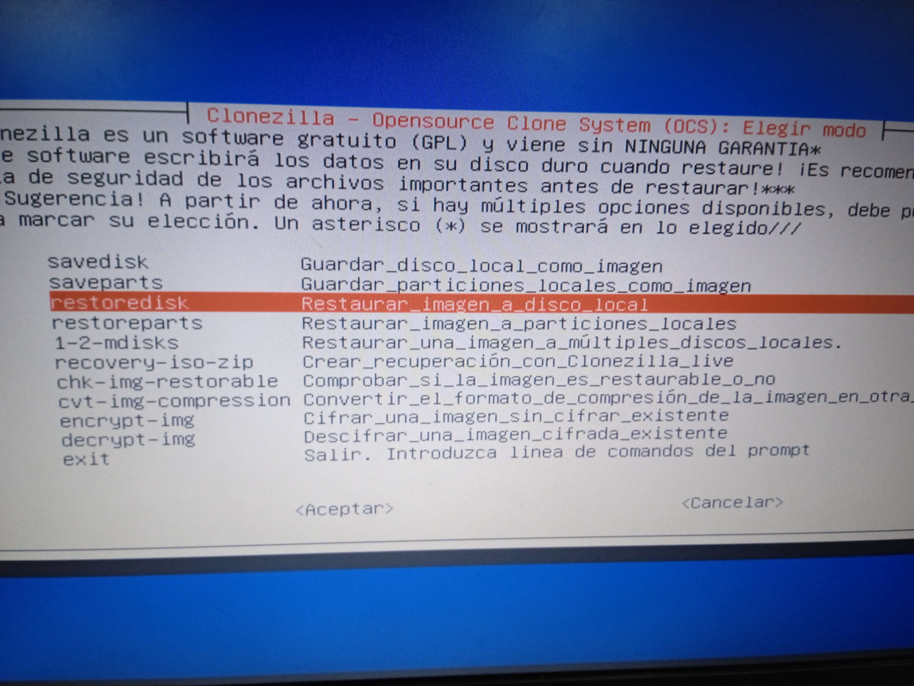
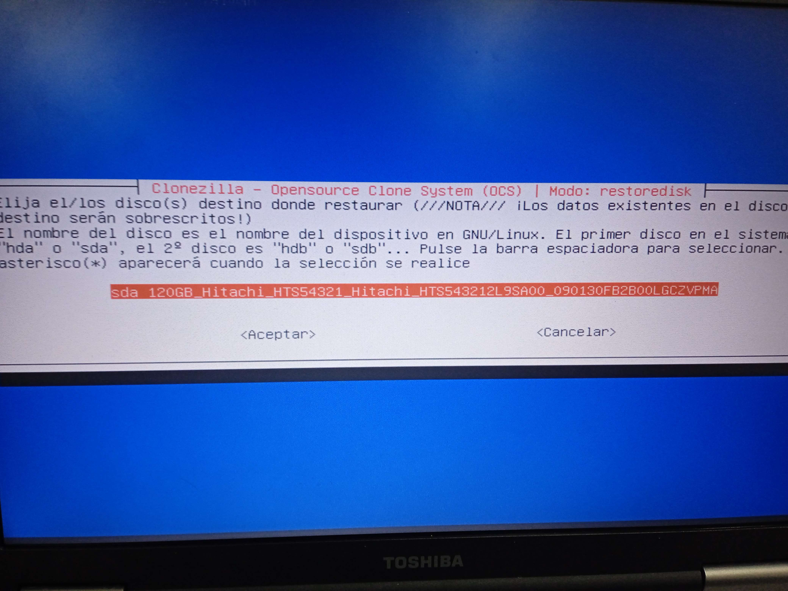
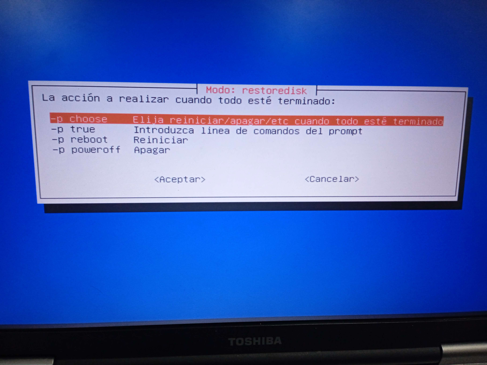
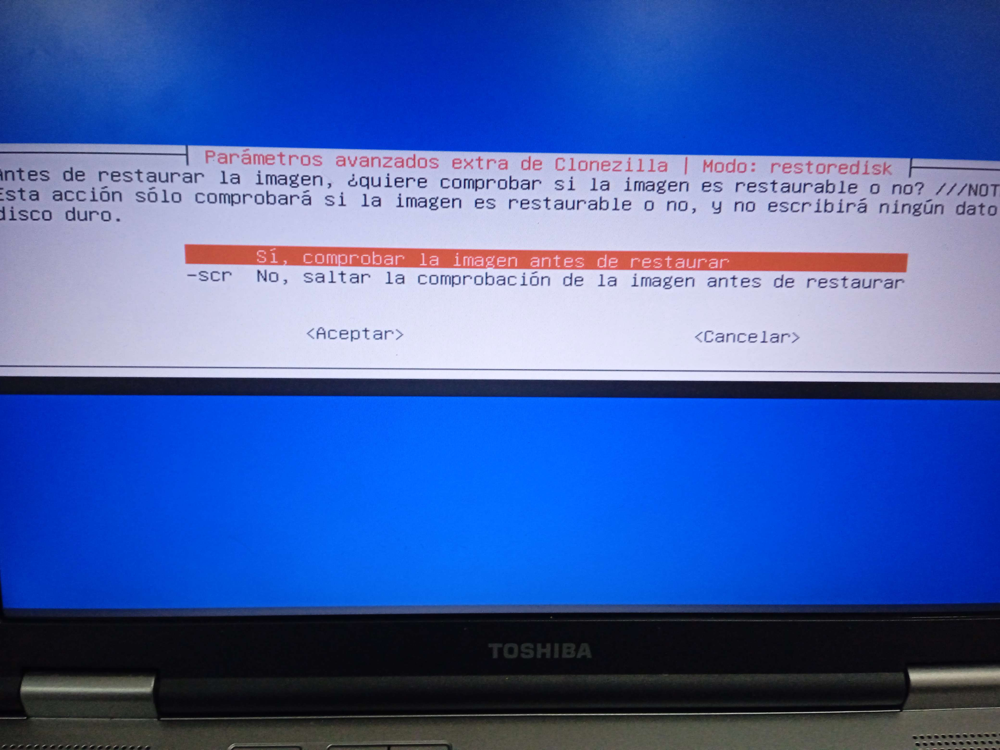
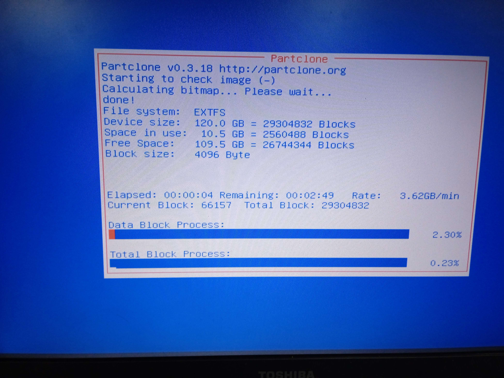
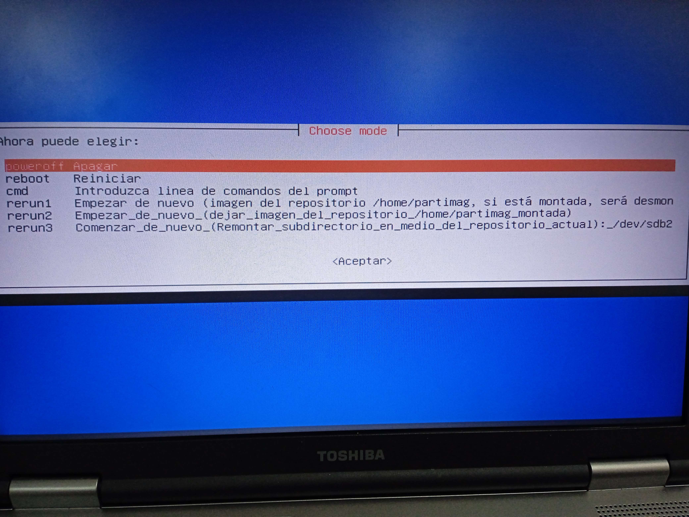

Para realizar la recuperación de los datos clonados, seguiremos los siguientes pasos
Con esta opción podremos tanto clonar una máquina, como recuperar los datos de la misma maquina previamente copiada.
Los primeros pasos serán iguales que en la clonación de la imagen
Insertamos el dispositivo usb en el pc, y una vez insertado, arrancamos el equipo
Seleccionamos el USB como arranque
Dentro del siguiente menu, seleccionamos Restaurar imagen a disco local
Dentro del siguiente menu, seleccionamos Restaurar imagen a disco local
Seleccionamos el dispositivo de destino donde queremos restaurar la imagen
En este cas, solo tenemos 1 dispositivo, por tanto seleccionamos este
Ahora podemos seleccionar varios modo de terminar el proceso
Podemos elegir entre:
Elegir qué hacer una vez finalizado el proceso
Abrir una ventana para insertar comandos
Reiniciar el equipo
Apagar el equipo
Podemos verificar si la imagen está clonada correctamente, paa no instalar una imagen corrupta
La opción mas segura es verificar la imagen, sin embargo esto tomará un poco mas de tiempo

Ahora simplemente esperamos a que se restaure la imagen clonada
Si hemos elegido la opción de elegir la siguiente accion una vez terminado el proceso, nos encontraremos en la siguiente ventana
Elegimos la que mas nos convenga, en este caso, como el equipo no lo usaremos mas seleccionamos apagar el equipo
Es recomendable reiniciar el equipo y verificar que la imagen se ha instalado bien